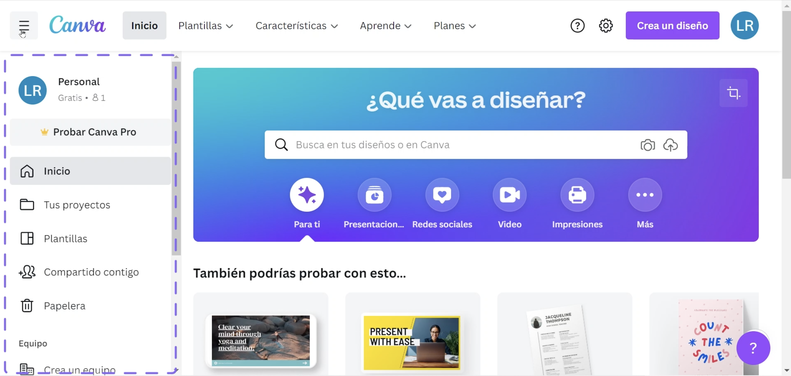
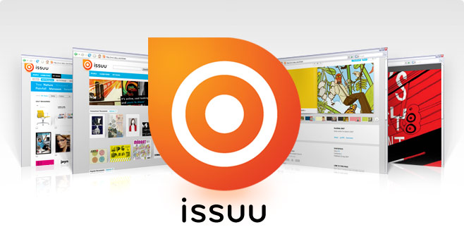
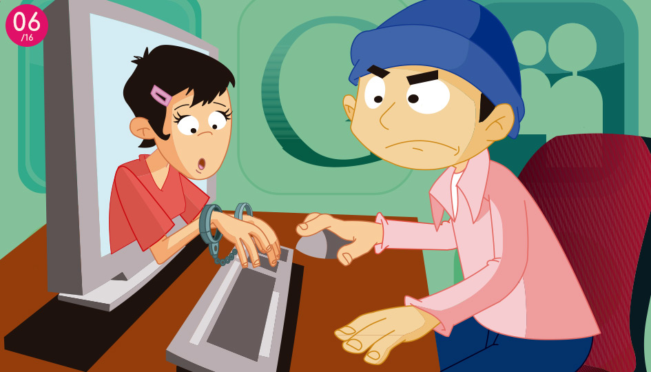
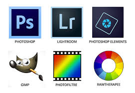
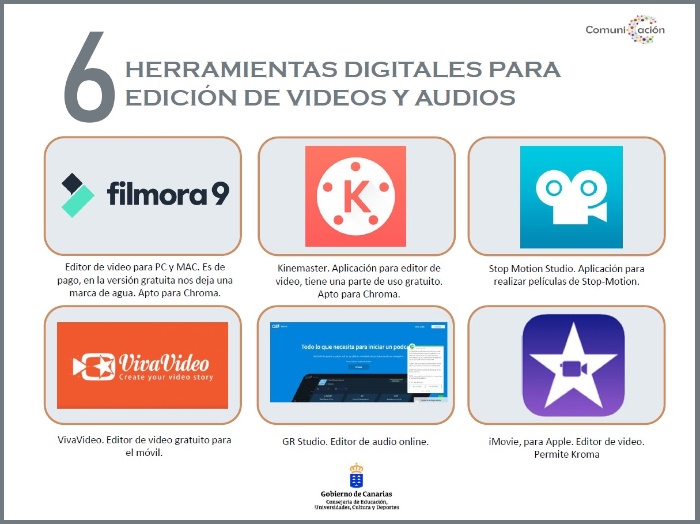
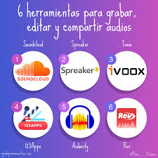
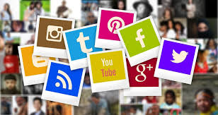
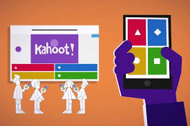

Instituto Nacional de Educación Diversificada San Miguel
Instituto Nacional de Educación Diversificada San Miguel
Producción y Contenidos Digitales
Hola, me llamo Emelyn, soy estudiante de Quinto Bachillerato en Ciencias y Letras con Orientación en Computación, y esta pagina fue creada por mi peresona, con el fin de dar a conocer todo sobre la especialidad de Producción y Contenidos digitales. Así que a continuación le daré más información sobre lo que es Producción de Contenidos Digitales
Introducción
La producción de contenidos digitales es el proceso creativo, técnico y estratégico mediante el cual se planifica, diseña, crea, edita y distribuye información en diferentes formatos digitales como texto, imagen, audio, video, animación, infografía o experiencias interactivas, con el propósito de comunicar, educar, informar, entretener o persuadir a una audiencia específica en entornos virtuales. Este proceso integra diversas etapas que van desde la generación de ideas hasta la publicación y evaluación de resultados, considerando factores como el público meta, los objetivos de comunicación, la selección de plataformas y la optimización para buscadores o redes sociales. Se trata de una actividad multidisciplinaria que combina creatividad, diseño gráfico, comunicación, marketing digital, periodismo, programación y análisis de datos, con el fin de transformar mensajes en experiencias digitales atractivas y efectivas. Además, la producción de contenidos digitales busca generar impacto, interacción y valor para los usuarios, adaptándose a las tendencias tecnológicas y al comportamiento de las audiencias, produciendo materiales como artículos, publicaciones en redes sociales, videos, podcasts, cursos en línea, campañas publicitarias o materiales educativos. En conclusión, es un proceso integral que une innovación y tecnología para crear mensajes que logren visibilidad, posicionamiento y conexión en el mundo digital.
¿Qué es la producción digital?
La producción digital también abarca todas las etapas necesarias para que un contenido llegue al público. Comienza con la planificación, donde se define el objetivo del mensaje y el tipo de contenido que se quiere crear. Luego sigue la creación, que puede incluir la escritura de guiones, la grabación de audio o video, la edición de imágenes o el diseño gráfico. Después viene la postproducción, que es cuando se mejora y se organiza el contenido final, como editar un video, corregir el audio o aplicar efectos especiales.
Una vez terminado, el contenido se publica en plataformas digitales como YouTube, Spotify, redes sociales, blogs, sitios web o aplicaciones. Gracias a internet, este contenido puede llegar a personas en todo el mundo, lo que hace que la producción digital sea una herramienta muy poderosa en la educación, la publicidad, el arte, el periodismo y otros campos.
Además, permite que las personas expresen su creatividad, compartan conocimientos y creen proyectos personales o profesionales. Hoy en día, incluso desde un celular es posible producir contenido digital de buena calidad. Por eso, es una habilidad muy útil y cada vez más necesaria en la vida diaria y en el mundo laboral.
Ejemplos de producción digital:
Diseñar un póster en Canva.
Grabar un podcast y subirlo a Spotify.
Escribir un blog con artículos informativos.
Crear un video educativo para YouTube.
Tipos de contenido digital
Existen diferentes tipos de contenidos que se producen y consumen en internet:
Las imágenes:son fundamentales en la comunicación digital porque captan la atención de inmediato. Además de fotografías e ilustraciones, también se utilizan en diseño gráfico, en educación como mapas o esquemas, y en redes sociales a través de memes, frases visuales o publicaciones llamativas. Las imágenes bien diseñadas ayudan a reforzar un mensaje y hacen que el contenido sea más atractivo y fácil de recordar.
El audio: es ideal porque puede ser consumido sin necesidad de mirar una pantalla. Además de música y podcasts, incluye efectos de sonido que se usan en videojuegos y películas, narraciones útiles para personas con discapacidad visual o para escuchar cuentos y artículos, y ambientes sonoros relajantes usados en aplicaciones de meditación o estudio. Este tipo de contenido permite una conexión emocional con el oyente y se adapta a muchos contextos de uso diario.
Los videos: son uno de los formatos más completos porque combinan imagen, sonido y movimiento. Se utilizan en la educación virtual para impartir clases y explicaciones, en marketing para mostrar productos, en el entretenimiento a través de series, retos o vlogs, y en eventos en vivo como conciertos, transmisiones deportivas o conferencias. Gracias a plataformas como YouTube, TikTok o Instagram, los videos tienen un gran alcance y son fáciles de compartir.
El contenido interactivo:permite que el usuario participe activamente en lugar de solo observar. Aquí se encuentran los juegos educativos que enseñan de forma divertida, los simuladores que permiten practicar oficios o situaciones reales, las actividades como sopas de letras, cuestionarios o rompecabezas, y también las presentaciones digitales que permiten explorar la información según el interés del usuario. Este tipo de contenido hace que el aprendizaje sea más dinámico y personalizado.
Todos estos tipos de contenido forman parte de la comunicación digital que usamos a diario. Gracias a la tecnología, hoy cualquier persona puede producir y compartir contenido desde un celular o una computadora. Esto no solo sirve para informar o entretener, sino también para enseñar, expresar ideas, contar historias, generar ingresos o crear conciencia sobre temas importantes. Crear contenido digital se ha convertido en una habilidad esencial en el mundo moderno y es una gran oportunidad para desarrollar la creatividad y llegar a muchas personas.
Bien, ahora que ya vimos los tipos de contenidos digitales que existen, es momento de hablar de algo que es muy popular hoy en día, y es lo siguiente:
El Blog
Qué es:Un blog es un sitio web dinámico que funciona como un diario o revista digital. Allí se publican entradas llamadas "posts" que pueden contener texto, imágenes, videos o enlaces. A diferencia de una página web estática, un blog se actualiza constantemente con nuevo contenido. Las personas usan los blogs para compartir conocimientos, contar experiencias, informar sobre temas de actualidad o incluso enseñar. También permite la interacción, ya que los lectores pueden dejar comentarios y compartir las publicaciones en redes sociales. Muchos blogs hoy en día también se utilizan como herramienta profesional para mostrar trabajos, construir una marca personal o apoyar un negocio.
Dónde se hace:Un blog se puede crear en distintas plataformas que ofrecen herramientas sencillas para escribir, subir imágenes y personalizar el diseño. Las más conocidas son WordPress, Blogger y Medium. También existen otras como Wix o Tumblr. Estas plataformas permiten publicar sin necesidad de saber programación y algunas ofrecen opciones para ganar dinero a través de publicidad o contenido patrocinado.
Ejemplo:Un estudiante puede tener un blog educativo donde publica resúmenes, ejercicios y recursos para sus compañeros. Un joven emprendedor puede crear un blog de manualidades para mostrar sus productos hechos a mano y compartir tutoriales. También existen blogs de salud donde expertos o personas con experiencia cuentan cómo cuidarse, qué alimentos consumir o cómo hacer ejercicio. Otro ejemplo es un blog literario donde alguien publica cuentos, poemas o reseñas de libros. Incluso los medios de comunicación tradicionales tienen blogs para tratar temas específicos como tecnología, educación, cultura o política.
Canva
Qué es:Canva es una herramienta digital en línea que permite crear diseños gráficos de manera sencilla, sin necesidad de conocimientos avanzados de programas profesionales. Funciona directamente desde el navegador o mediante su aplicación móvil. Canva ofrece una gran variedad de recursos como imágenes, íconos, tipografías, ilustraciones y plantillas prediseñadas que se pueden personalizar según la necesidad del usuario. Es utilizada tanto por estudiantes y docentes como por profesionales y empresas.
Usos principales:Se puede usar para hacer presentaciones atractivas, carteles informativos o promocionales, publicaciones para redes sociales, videos cortos, portadas de documentos o libros, infografías educativas, invitaciones digitales, certificados y muchos tipos de contenido visual más. También es útil para proyectos de marketing, branding o actividades escolares.
Ventajas:Es fácil de usar y accesible desde cualquier dispositivo con internet. Permite trabajar en equipo, compartiendo los diseños con otros usuarios para editarlos o revisarlos. Además, ofrece plantillas listas que se pueden personalizar, guardar y descargar en diferentes formatos como PNG, JPG, PDF o video. Esto hace que crear diseños profesionales sea rápido y práctico, incluso para personas que no saben manejar programas complejos de diseño gráfico.
Ejemplo:Se puede crear un cartel digital para un evento escolar, un video explicativo para redes sociales, una presentación para la clase, un folleto informativo, invitaciones a un evento o un certificado para reconocer logros de los estudiantes.

Revista digital / Issuu
Revista digital IssuuIssuu permite que los documentos sean interactivos y accesibles desde cualquier dispositivo, lo que significa que no se necesita descargar archivos pesados para leerlos. Además, ofrece estadísticas sobre la cantidad de lectores, páginas vistas y tiempo de lectura, lo que es útil para medir el impacto del contenido publicado. También se pueden incluir enlaces que lleven a otras páginas web, videos incrustados o contenido adicional, haciendo la experiencia más completa. Issuu es muy útil tanto para fines educativos como comerciales, y permite crear publicaciones con apariencia profesional sin necesidad de conocimientos avanzados en diseño editorial.
Usos:Issuu se utiliza para una gran variedad de propósitos. En el ámbito educativo, se puede crear revistas escolares con artículos de alumnos, fotografías de eventos, entrevistas o investigaciones. Las empresas pueden publicar catálogos de productos o folletos interactivos para mostrar sus servicios de manera profesional. También es útil para difundir investigaciones académicas, trabajos digitales o proyectos creativos, llegando a un público amplio y ofreciendo una experiencia de lectura atractiva. Los diseñadores, artistas y escritores pueden usar Issuu como un portafolio digital para mostrar su trabajo, permitiendo que clientes, profesores o seguidores exploren sus creaciones fácilmente.
Además, Issuu ofrece estadísticas de lectura, mostrando cuántas personas han visto la publicación, cuántas páginas han explorado y cuánto tiempo han pasado en cada sección. Esto ayuda a medir el impacto del contenido y a mejorar futuras publicaciones. Por todas estas características, Issuu se ha convertido en una herramienta muy valiosa para la difusión de contenido digital profesional y educativo, facilitando la creación de revistas interactivas de manera rápida y accesible.
Ejemplo: Un estudiante puede crear una revista escolar mensual con noticias de la escuela, entrevistas a compañeros y fotos de eventos. Una pequeña empresa puede publicar un catálogo interactivo de temporada para sus clientes, o un grupo de artistas puede mostrar su portafolio digital con ilustraciones, fotografías y reseñas.

Educaplay
Qué es:sEducaplay es una plataforma digital que permite crear actividades educativas interactivas y juegos didácticos. Su base se encuentra en el aprendizaje a través del juego, una forma natural de entender el mundo y asimilar conocimientos. Estudios muestran que cuando se presenta información de manera tradicional, solo un 30% se recuerda; si se observa una acción mientras se explica, se retiene un 50%; pero al realizar la acción, incluso de forma simulada, la retención alcanza el 90%. Por ello, integrar juegos y actividades interactivas en el aprendizaje ayuda a que los estudiantes comprendan y recuerden mejor los conceptos, incluso los más complejos.
Usos:Educaplay permite crear juegos, crucigramas, sopas de letras, cuestionarios, mapas interactivos y otras actividades que combinan diversión con aprendizaje. Es útil para profesores que quieren dinamizar sus clases, estudiantes que desean practicar de manera interactiva, y centros educativos que buscan recursos digitales para complementar la enseñanza tradicional.
mportancia: El uso de Educaplay favorece el aprendizaje activo y práctico. Motiva a los estudiantes, desarrolla habilidades cognitivas, fomenta la participación y ayuda a consolidar conocimientos de forma entretenida. Además, permite a los docentes evaluar de manera rápida y atractiva el nivel de comprensión de sus alumnos, integrando la tecnología al proceso educativo.
Ejemplo:Un maestro puede crear un cuestionario digital sobre historia para que sus alumnos lo respondan en clase o desde casa, o diseñar un juego interactivo para entender conceptos de matemáticas, geografía o ciencias. También se puede usar para repasar vocabulario, realizar competencias entre estudiantes o crear mapas interactivos que expliquen rutas históricas, regiones geográficas o eventos importantes.
Netiquette - Normas de comportamiento en internet
Importancia:La Netiquette es esencial para mantener una buena convivencia en plataformas digitales, prevenir conflictos y crear espacios seguros y respetuosos. Fomenta la educación digital, ayuda a desarrollar una comunicación responsable y protege nuestra reputación en línea. Además, enseña a los usuarios a pensar antes de publicar, valorar la opinión de otros y actuar con ética en el entorno digital. Aplicar estas normas también es importante para profesionales y estudiantes, ya que la comunicación correcta en línea refleja educación, responsabilidad y respeto hacia los demás.
Qué es:La Netiquette es el conjunto de reglas de conducta y buenas prácticas que debemos seguir al comunicarnos en internet. Estas normas buscan promover el respeto, la cortesía y la educación digital en plataformas como redes sociales, foros, correos electrónicos, blogs y aplicaciones de mensajería como WhatsApp, Facebook, Instagram, TikTok y otras. Aplicar la Netiquette ayuda a que la interacción en línea sea más segura, agradable y efectiva, evitando malentendidos, conflictos o difusión de información falsa.
Ejemplos:
No usar lenguaje ofensivo: Esto significa evitar insultos, burlas o palabras que puedan herir a otras personas. El lenguaje ofensivo genera conflictos, puede afectar emocionalmente a otros usuarios y da una mala imagen de quien lo escribe. Incluso en discusiones o debates, es importante expresarse de forma respetuosa y clara, usando palabras amables y educadas.
No escribir en mayúsculas: En internet, escribir todo en mayúsculas se interpreta como gritar. Puede hacer que los mensajes parezcan agresivos o intimidantes, aunque no sea la intención. Por eso, es mejor usar mayúsculas solo para iniciar oraciones o destacar palabras importantes, manteniendo la comunicación clara y cordial.
Citar las fuentes cuando usamos información de otros: Cuando compartimos ideas, textos, imágenes o videos creados por otras personas, es fundamental dar crédito al autor original. Esto respeta los derechos de autor y evita el plagio. Citar fuentes también aumenta la credibilidad de la información que compartimos y permite que otros puedan consultar la fuente original si quieren más detalles.
Respetar las opiniones aunque sean diferentes: En internet conviven personas con ideas, creencias y experiencias distintas. Respetar opiniones diferentes fomenta un diálogo constructivo y evita conflictos innecesarios. Escuchar y valorar los puntos de vista de otros permite aprender cosas nuevas y mantener una comunicación educativa y positiva.
Importancia: Mantiene una buena convivencia en plataformas digitales y fomenta la educación digital.

Herramientas para la Producción Digital
Herramientas para la Producción Digital La producción digital necesita programas y aplicaciones que facilitan la creación de textos, imágenes, audios, videos y recursos interactivos. Estas herramientas permiten que cualquier persona pueda crear contenido educativo, profesional o creativo, y compartirlo en internet de manera rápida y atractiva. Gracias a estas herramientas, es posible innovar en la comunicación, mejorar la educación, impulsar negocios y ofrecer entretenimiento de alta calidad. Algunas de las más utilizadas son:
Herramientas de edición de imágenes
Adobe Photoshop: ideal para diseño profesional y edición avanzada, permitiendo trabajar con capas, filtros, efectos especiales, retoques precisos y creación de ilustraciones complejas.
Canva: fácil de usar, con plantillas prediseñadas, elementos gráficos, fondos y tipografías que facilitan la creación rápida de carteles, presentaciones, infografías, publicaciones para redes sociales y contenido educativo interactivo.
GIMP: alternativa gratuita para editar imágenes, con herramientas profesionales similares a Photoshop, útil para estudiantes, emprendedores o creadores que buscan soluciones sin costo.

Herramientas de edición de video
Adobe Premiere Pro: software profesional de edición audiovisual que permite crear videos complejos con efectos visuales, transiciones, corrección de color, mezcla de audio y gráficos animados.
Filmora: más simple y accesible, usado para proyectos escolares, personales o pequeñas empresas, con herramientas intuitivas para agregar títulos, música, efectos y filtros.
CapCut: aplicación móvil muy popular para videos cortos en redes sociales, permite editar clips, añadir filtros, transiciones, música, subtítulos y efectos especiales, ideal para contenido dinámico y viral.

Herramientas de edición de audio
Audacity: gratuito y fácil para grabar, editar y mejorar audios, ideal para podcasts, narraciones, entrevistas y efectos de sonido.
FL Studio: usado para producir música, crear beats, melodías y mezclas profesionales, muy popular entre músicos y productores digitales
GarageBand (Mac): permite grabar, mezclar y producir sonidos o canciones de manera intuitiva, ideal para estudiantes de música o creadores de contenido sonoro.

Herramientas de publicación y difusión
YouTube: permite subir y compartir videos a nivel mundial, ideal para educación, entretenimiento, tutoriales, transmisiones en vivo y canales personales o profesionales.
Spotify: permite publicar música o podcasts, llegando a millones de oyentes en todo el mundo desde cualquier dispositivo.
Plataformas de videos cortos y creativos: como TikTok, Instagram Reels y YouTube Shorts, permiten crear contenido dinámico, viral y fácil de compartir, fomentando la creatividad y la comunicación rápida.

Herramientas interactivas y educativas
Educaplay: permite crear actividades educativas dinámicas como cuestionarios, juegos, mapas interactivos, crucigramas y sopas de letras, mejorando la retención de información y haciendo el aprendizaje divertido.
Genially: para presentaciones interactivas, infografías, recursos visuales y animaciones, ideal para docentes, estudiantes y creadores que quieren captar la atención del público.
Kahoot!: cuestionarios y juegos de aprendizaje en línea que fomentan la participación, evaluación y refuerzo de conocimientos de forma lúdica y atractiva.

Importancia en la actualidad
La producción y los contenidos digitales son esenciales en la actualidad porque:
En educación, cursos virtuales, clases en línea, juegos educativos y recursos interactivos que mejoran la comprensión y la retención de información.
Entretenimiento: ofrecen películas, música, videojuegos y transmisiones en vivo a millones de personas.
Comunicación: facilitan que cualquier persona comparta ideas y llegue a una audiencia global en segundos.
En resumen, los contenidos digitales han cambiado la forma en que nos informamos, aprendemos y nos divertimos.